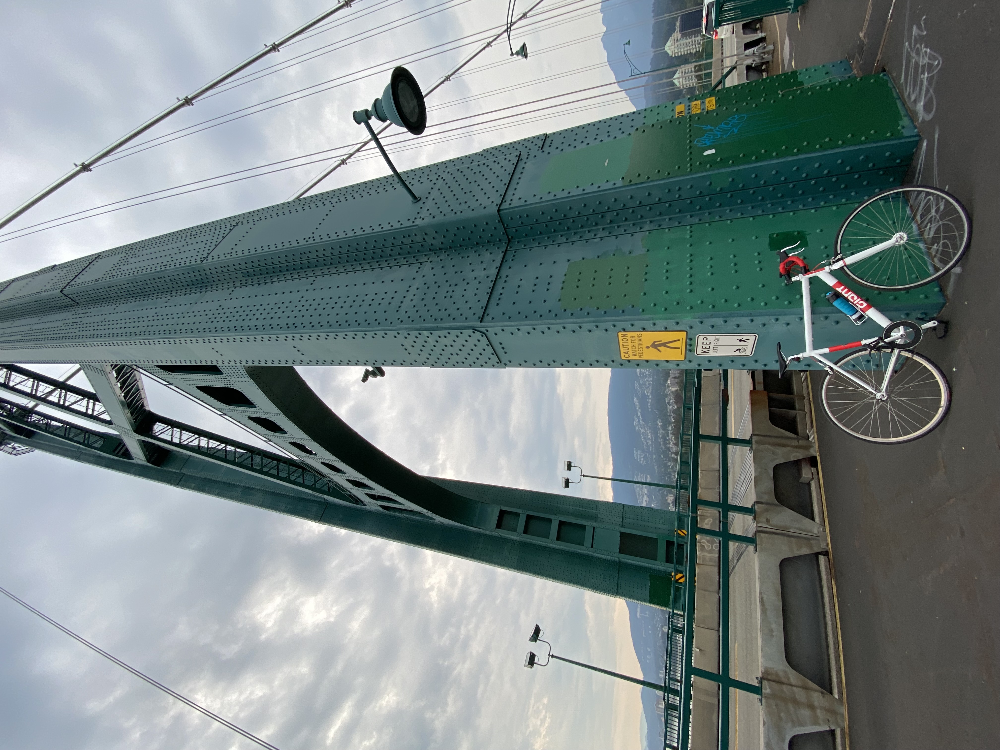
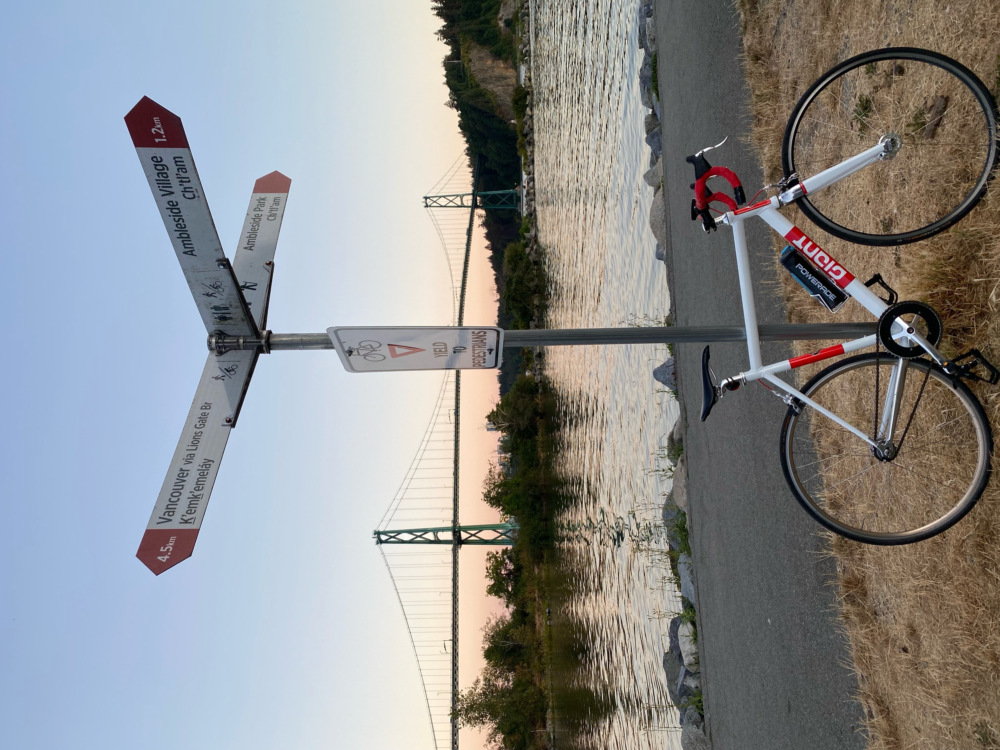
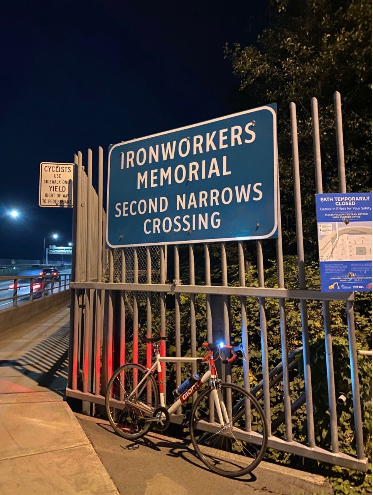
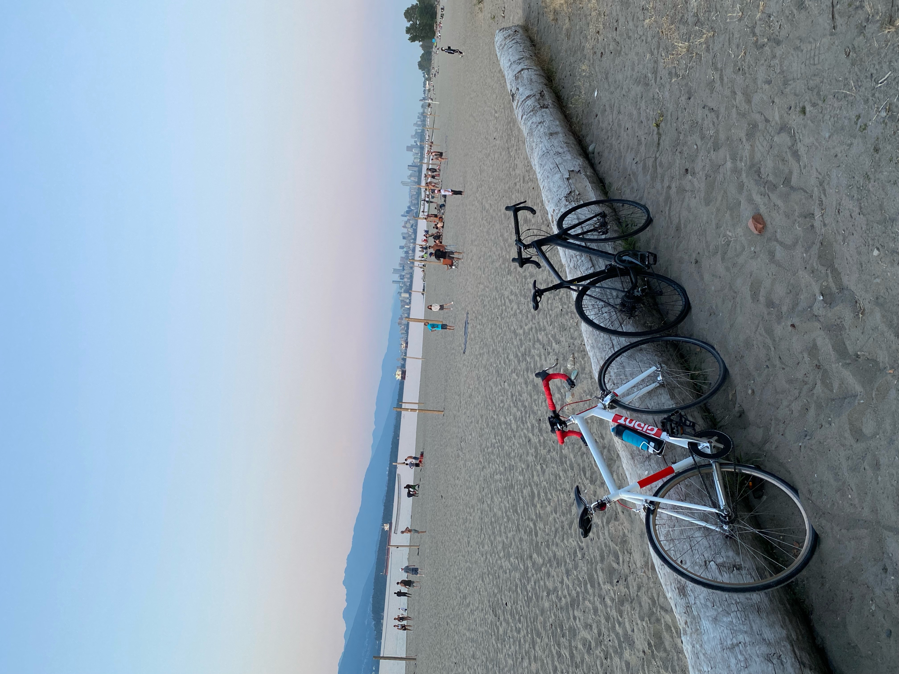
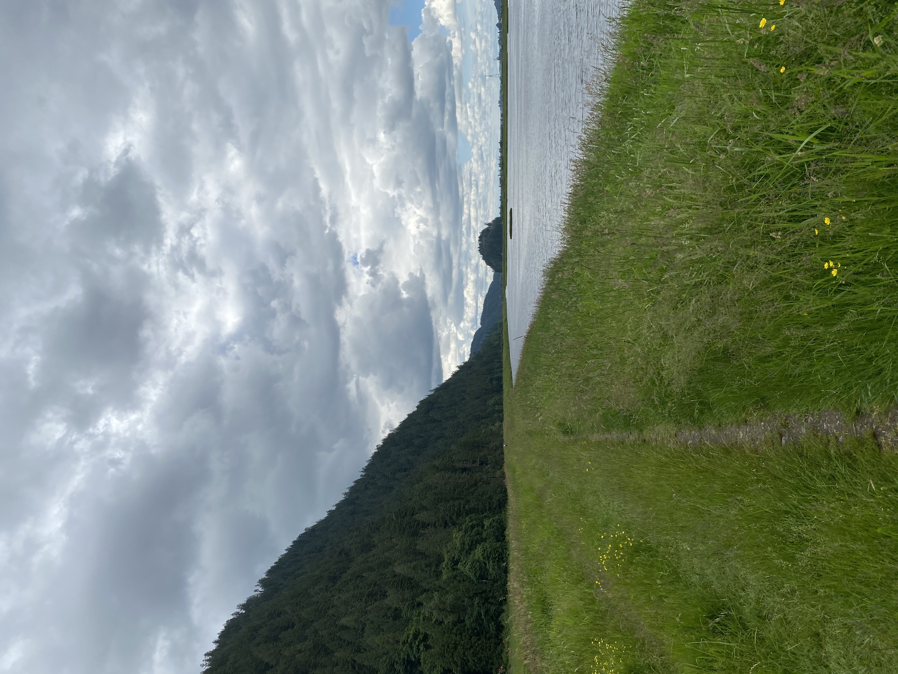
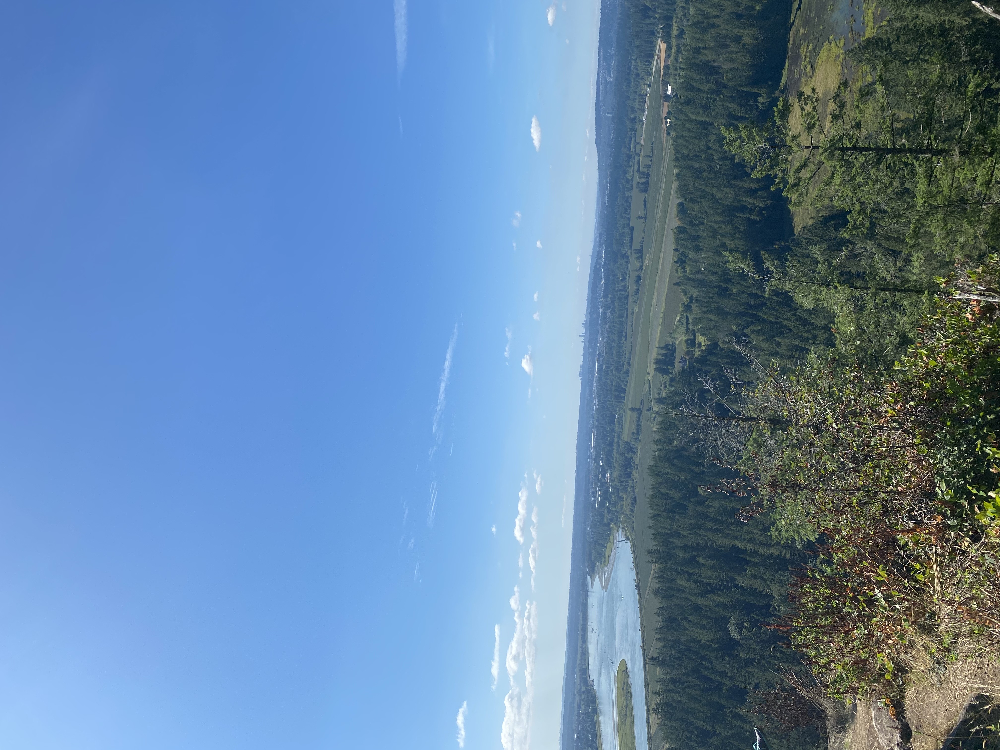
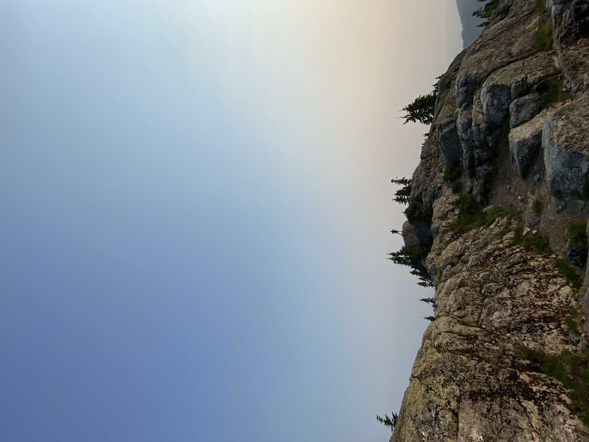

Biking
During the pandemic, I bought a fixie bike (that I currently use with a free-wheel) off of Facebook
Marketplace to explore cities and bike routes throughout
Metro Vancouver. One day I would love to ride on the Sea-To-Sky to Whistler! But so far, here are some of my
favourite places to ride in no particular order are:
- Steveston in Richmond
- UBC in Vancouver
- Deep Cove in North Vancouver
- Ambleside Beach in West Vancouver




Hiking
Living in one of the most beautiful areas of the world, it would be a crime if I never took advantage of
all the beautiful hikes and views that nature has to offer here. Below are some pictures from some of my
favourite hikes- Pump Peak (North
Vancouver), Dog Mountain (Coquitlam), Pitt-Addington Marsh (Pitt Meadows), Panorama Ridge




Sports
My two favourite sports are hockey and soccer. I grew up playing ice hockey and avidly follow the
Vancouver Canucks (through thick and thin). In high school, I became enamoured with soccer and quickly
grew attached to the Vancouver Whitecaps of MLS and the Canadian Men's National Team. Some of my favourite
moments from each of my teams are
shown below :D